Weby a aplikaceV provozu
SANDIFF
Web LoL týmu kámošů z Písku: zeď plakátů, profily hráčů a ranky z Riot API.
- Python
- JavaScript
- Flask
- SQLite
61projektů z jednoho monorepa
Na hlavní stránce je jen pár vybraných věcí. Tady je všechno: zakázky, hry, AI pokusy i malé nástroje, které mi zjednodušují den. Stránku staví skript přímo z mého kódu, takže technologie, velikost a datum poslední změny jsou vždycky pravdivé.
01Živě
Tyhle běží na mém Raspberry Pi doma a dají se bezpečně proklikat. Tečka ukazuje, jestli zrovna odpovídají.
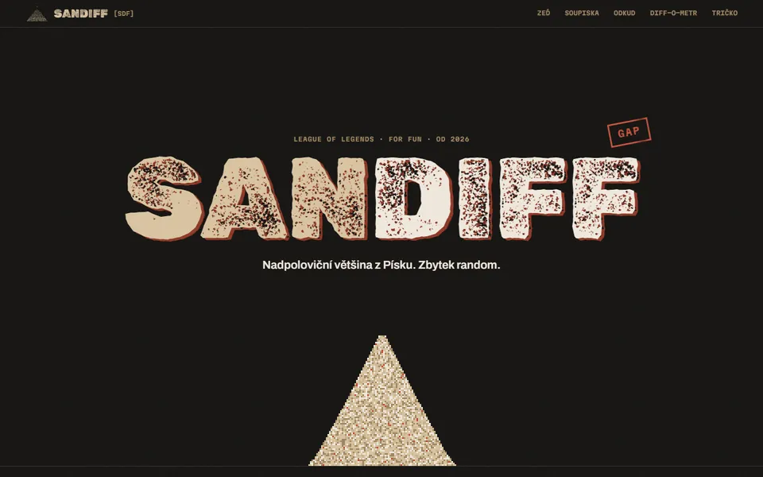
Zkouším spojení…lol.bakix.cz SANDIFF Web LoL týmu kámošů z Písku: zeď plakátů, profily hráčů a ranky z Riot API. Vyzkoušet naživo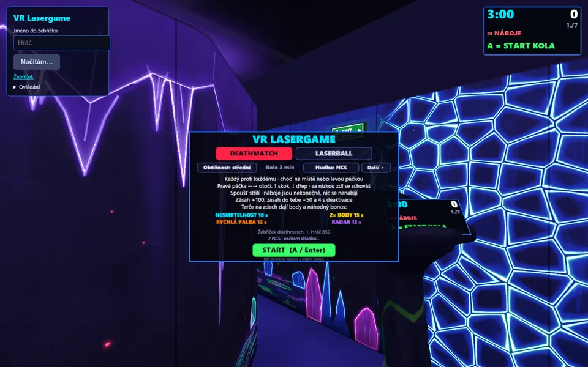
Zkouším spojení…vr.bakix.cz VR Lasergame Deathmatch proti šesti botům na Questu 3, pohybuješ se chůzí na místě. Vyzkoušet naživo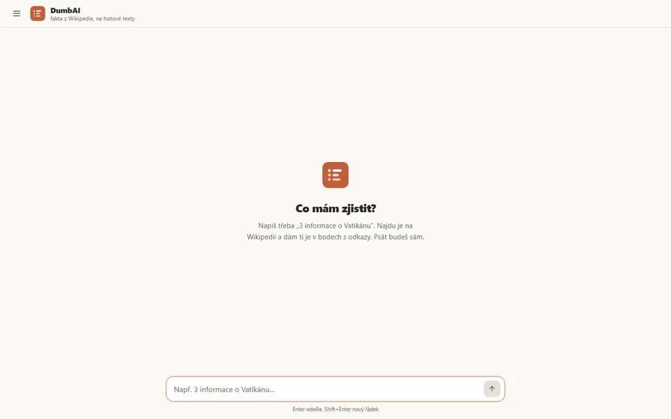
Zkouším spojení…dumbai.bakix.cz DumbAI Hledač faktů nad českou Wikipedií a Wikidaty schválně bez AI, aby šel použít i ve škole. Vyzkoušet naživo02Archiv
Seřazené od toho, na čem jsem dělal naposledy. Proklikej kategorie nebo hledej podle názvu či technologie.
Web LoL týmu kámošů z Písku: zeď plakátů, profily hráčů a ranky z Riot API.
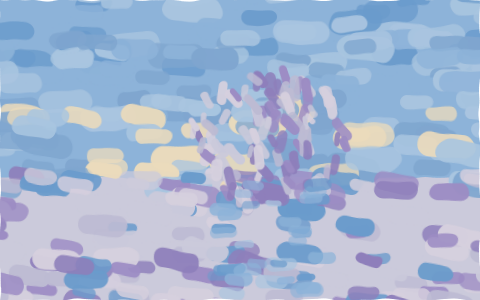
Asistent v liště: napíšeš česky, co chceš, a on to v počítači udělá, i bez internetu.
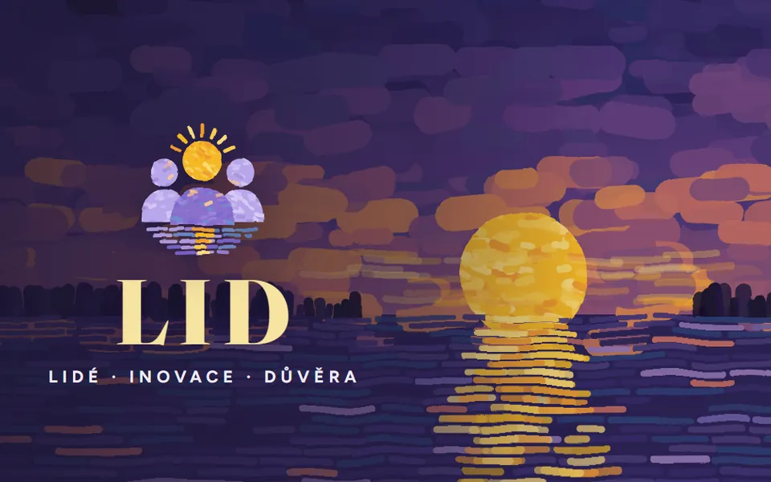
Aplikace školního parlamentu: nápady, tajné hlasování a veřejná nástěnka.
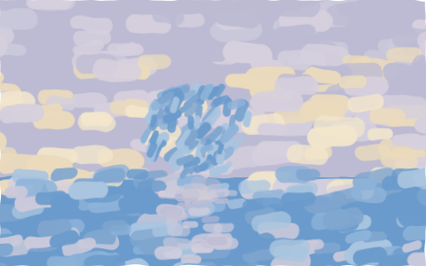
Offline webovka, která učí hrát na kytaru po patnácti minutách denně.
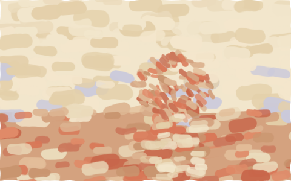
Cestovní režim a optimalizace notebooku ve stylu Applu přes PowerShell a C#.
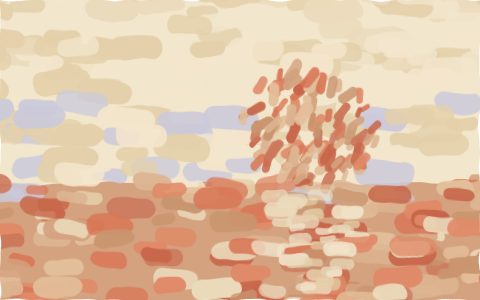
Replay buffer pro hry: F8 uloží posledních 30 vteřin a jedním klikem jde clip na Discord.
Web a systém skutečné laser arény: rezervace, statistiky z Laserforce a tři úrovně správy.
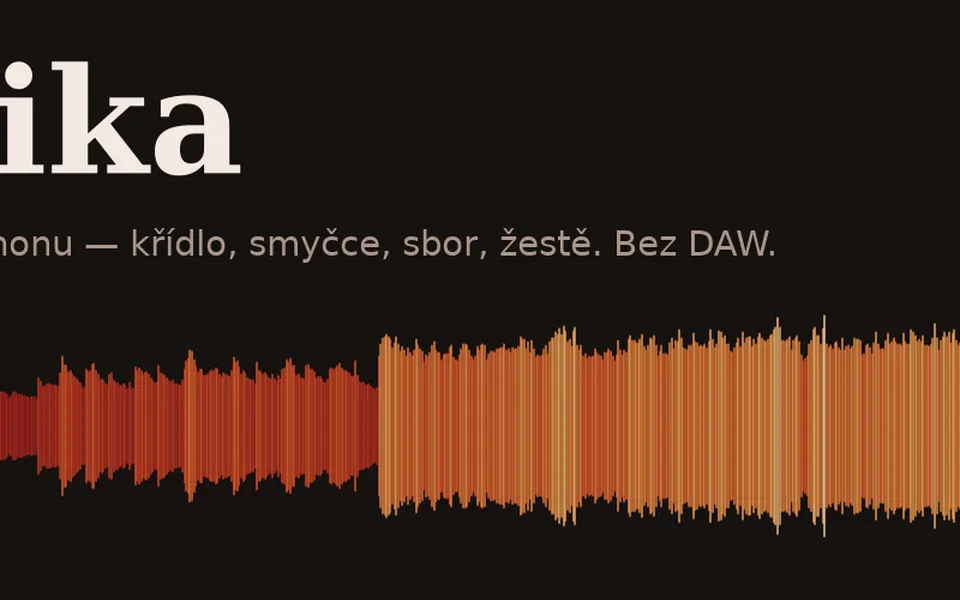
Python knihovna na skládání hudby bez DAW: syntéza, efekty, mix a sampler.
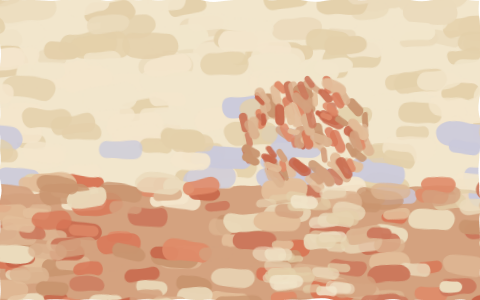
Spočítá kód v monorepu a vyrobí z toho animovaná SVG na můj GitHub profil.
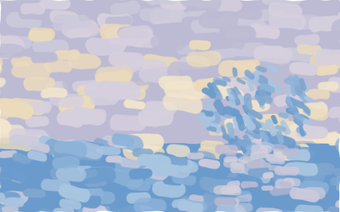
Hosté na párty přidávají písničky z mobilu a hraje to Spotify nebo YouTube přes RPi.
Deathmatch proti šesti botům na Questu 3, pohybuješ se chůzí na místě.
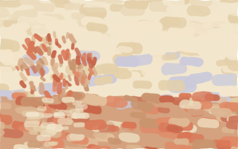
Zamkne složku heslem se skutečným šifrováním AES-256-GCM, ne jen schováním.
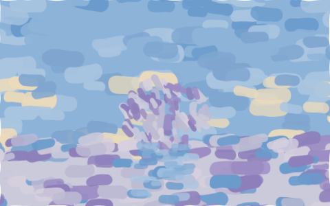
Prezentační engine: řeknu, co chci, a Claude to zapíše jako data do slidů.
Hledač faktů nad českou Wikipedií a Wikidaty schválně bez AI, aby šel použít i ve škole.
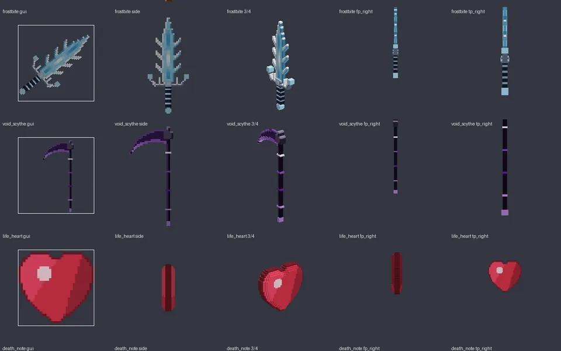
Minecraft plugin: osm mýtických zbraní, každá jen jednou na server, tři životy a tajný Death Note.
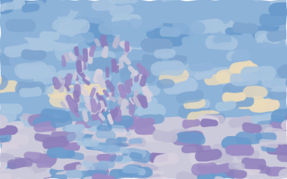
Bot, kterému napíšeš, jak má server vypadat, a Claude ho postaví přes tool use.
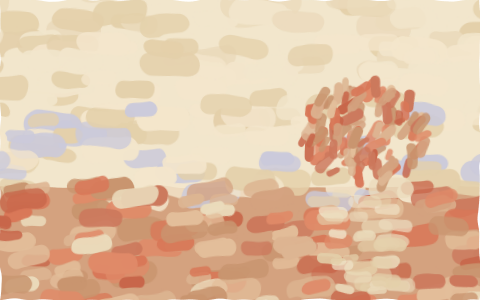
OBS overlay, kde poskakuje nálepka toho, kdo zrovna mluví na Discordu.
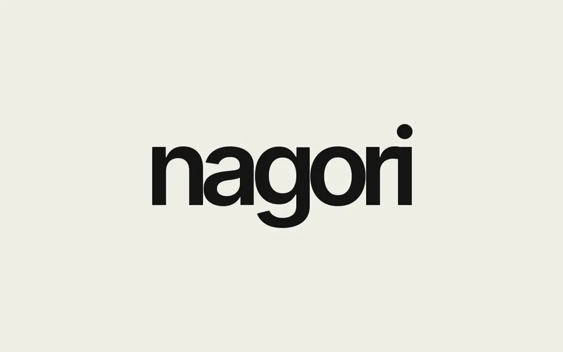
Web indie studia a hry Sparks of Silt se scroll animacemi v čistém JavaScriptu.
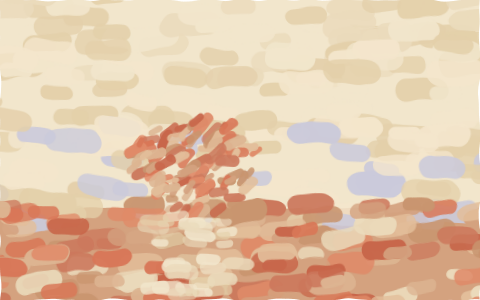
Každý den naservíruje 25 minut matiky nebo češtiny z testů CERMAT.
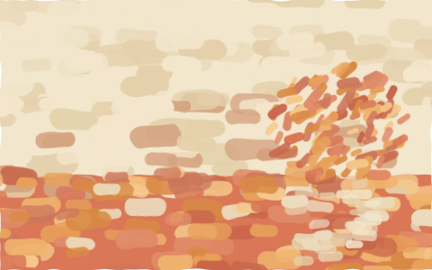
Návrh nového webu základní a mateřské školy, celý obsah v jednom datovém souboru.
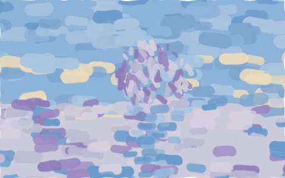
Lokální převod hlasu buď rychle přes DSP, nebo kvalitně přes neurální model RVC.
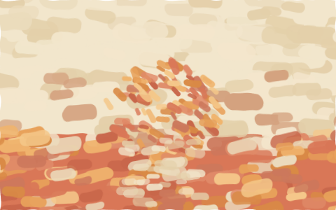
Nový web a rezervace po hodinách pro arénu v Domažlicích, náhrada za starý WordPress.
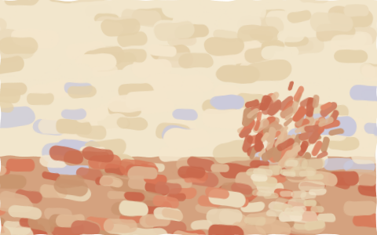
Ovládací panel celého monorepa: spouští projekty, ukazuje logy a stav gitu.
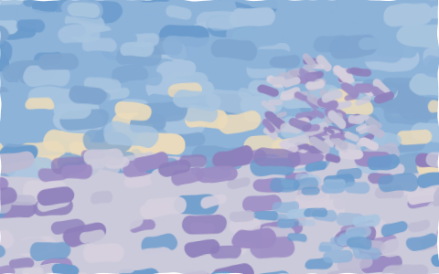
Skutečný connectome mozku octomilky se evolucí učí hrát Tetris.
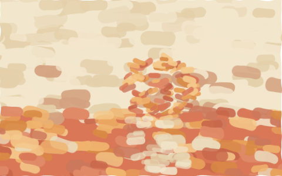
Prototyp klientské zóny arény: profil hráče, historie her a žebříčky.
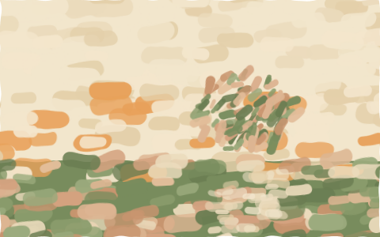
Voxelová survival v prohlížeči, textury i hudbu generuje kód za běhu.
Studijní asistent jako PWA, který zná tvůj rozvrh a otázky posílá na víc AI modelů.
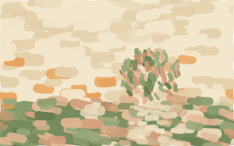
Offline renderer jednobitové manga kresby z JSON scén, s vlastním rasterizérem a rastry.
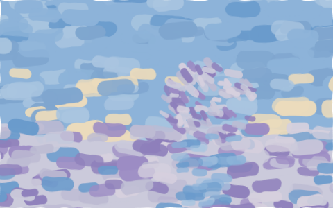
AI kouč, který sleduje živou hru League of Legends a radí, co dělat dál.
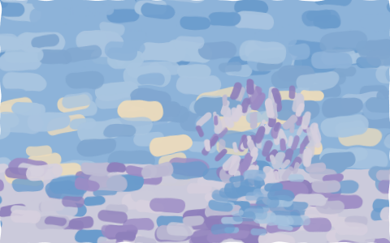
Animační engine, který řídí jazykový model a dostává zpátky obrázek i naměřená čísla.
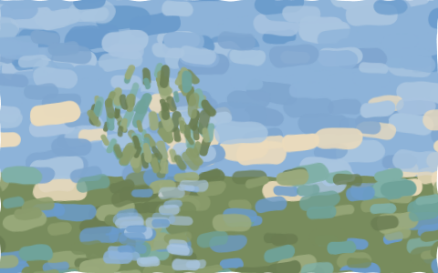
Webhook servery: git push ověří podpisem a nasadí web, ten nejnovější umí i rollback.
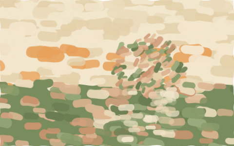
Pixel-art vizuální novela s volbami a body náklonnosti k postavám.
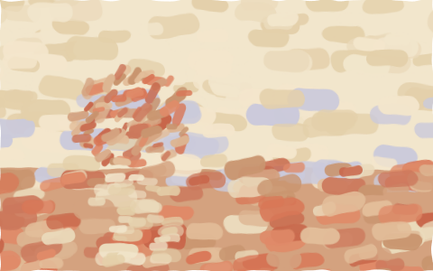
Denní report portfolia a upozornění na velké pohyby, jen pro čtení.
AI studijní asistent nad Bakaláři s vlastním OAuth přihlášením a Premium přes Stripe.
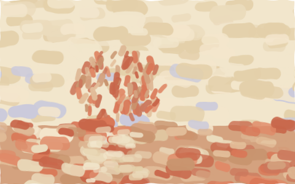
Přes webkameru hlídá, jak sedím, a když se hrbím, vyskočí červené okno.
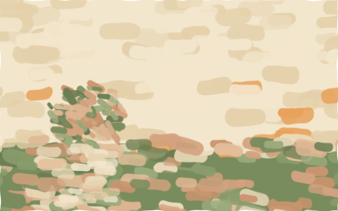
2D pixel-art hackerská hra inspirovaná seriálem Mr. Robot.
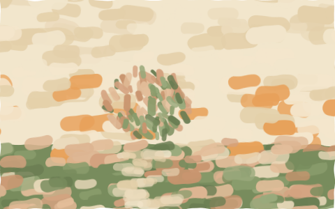
Hra na mafii proti AI botům, kteří spolu lžou a obviňují se.
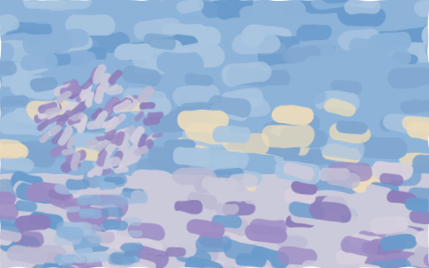
Kódovací agent v terminálu nad lokálními modely z Ollamy.
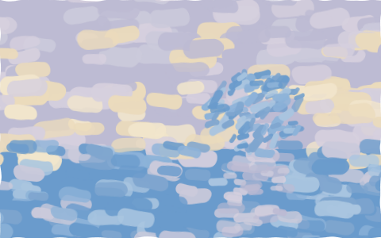
Malý web s profily spolužáků na konec školního roku.
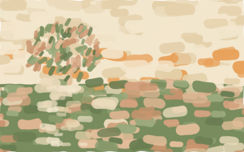
Příběhová hra o rozvozu balíků vykreslovaná vlastním raycasterem.
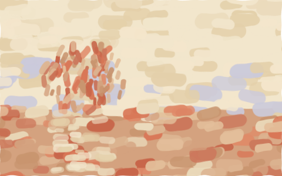
Schválně děravá CTF aplikace na trénink SQL injection a XSS, běží jen lokálně.
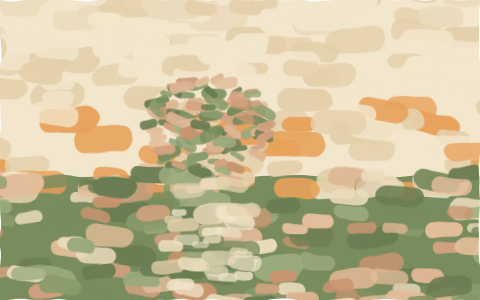
Textové RPG po apokalypse: jeden hráč, AI společníci a oddělený AI vypravěč.
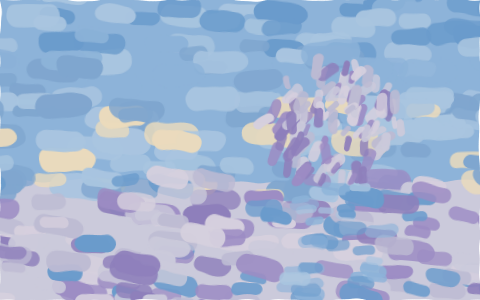
Stavění v Roblox Studiu přes MCP, které řídí levný model GLM místo Clauda.
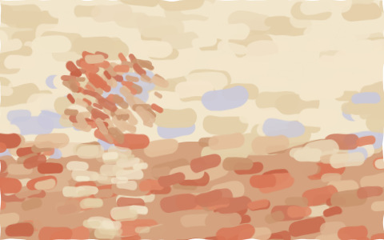
Vlastní programovací jazyk pro web, kde routy, databáze i přihlášení jsou přímo v jazyce.
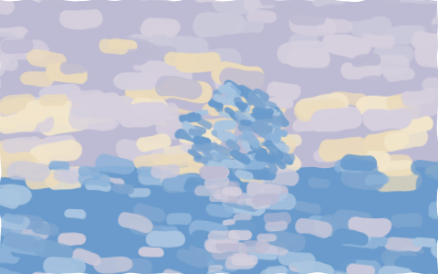
Hádání míst na mapě pro víc hráčů naráz přes WebSockety.
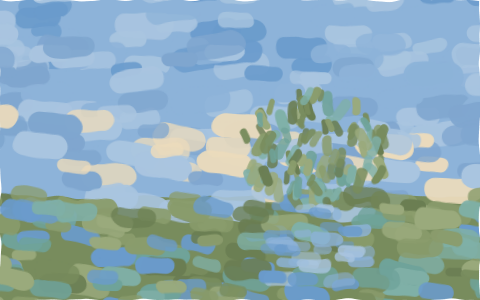
Webový panel na spouštění a správu Minecraft serveru.
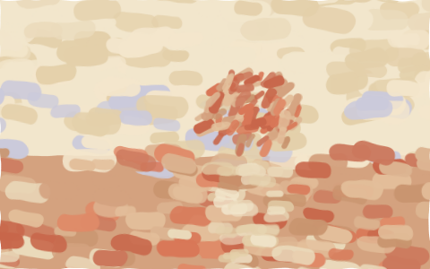
Vizualizér čehokoli, co zrovna hraje v počítači, i s názvem písničky ze Spotify.
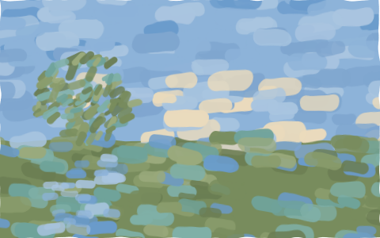
Discord bot hlídá Raspberry Pi, na kterém běží bakix.cz, a každé ráno pošle report.
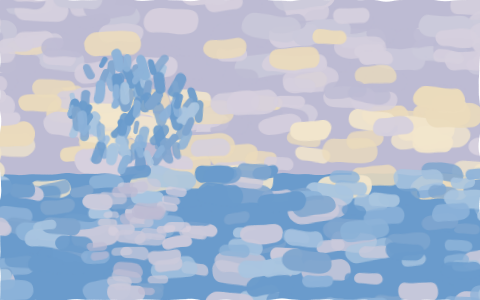
Stahuje a třídí data o přijímacím řízení na střední školy.
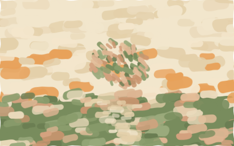
Pixel-art příběhová hra v Pygame, chystaná zdarma na Steam.
Sleduje, co dělám na počítači, AI to roztřídí a každé pondělí přijde report.
Z mobilu se stane dálkový ovladač počítače.
Původní systém arény: skóre, turnaje, Discord bot a ovládání Minecraft serveru na RPi.
Stáhne moje statistiky z Laserforce a ukáže je v grafech s historií her.
Verze Bakixu postavená za jediný den na vibe-coding hackathonu 19. 5. 2026.
Správa služeb, skener portů a ukládání odkazů pro můj Linux server.
PWA, která ukazuje, kolik tokenů spotřebuju v Claude Code.
Dashboard vzdáleného Linux boxu: monitoring, prohlížeč NAS a napojení na Odoo.
Šachy v prohlížeči proti AI soupeři.
Osobní AI asistent v terminálu s vlastní pamětí.
Hlasový asistent s rozpoznáváním řeči a hlasem z ElevenLabs.
Nic takového tu zatím není.
03Jak to vzniká
build_projects.py je projde, z requirements.txt, package.json a samotného kódu pozná technologie, spočítá řádky a zjistí, kdy jsem na projektu naposledy dělal.